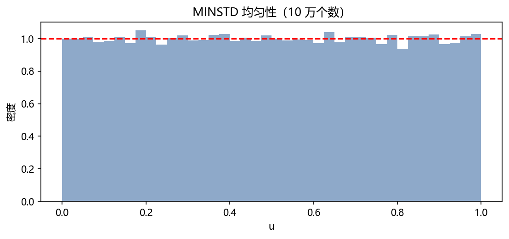
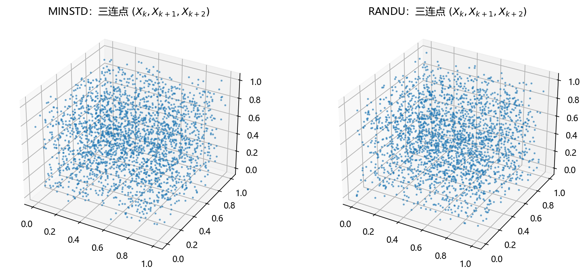
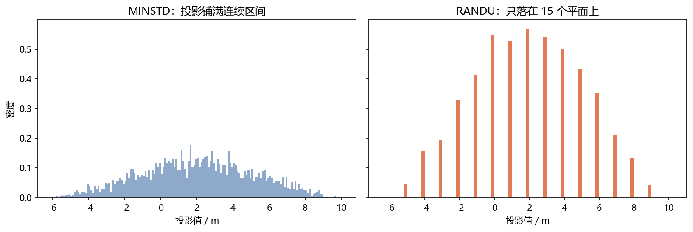
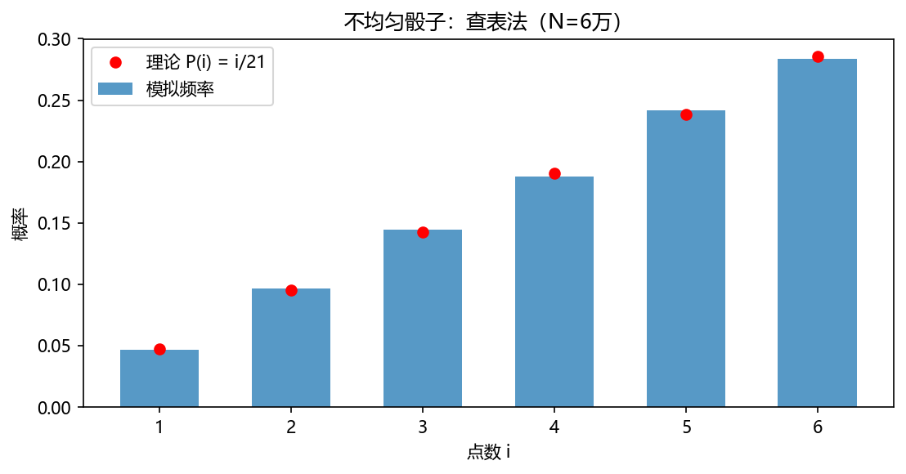
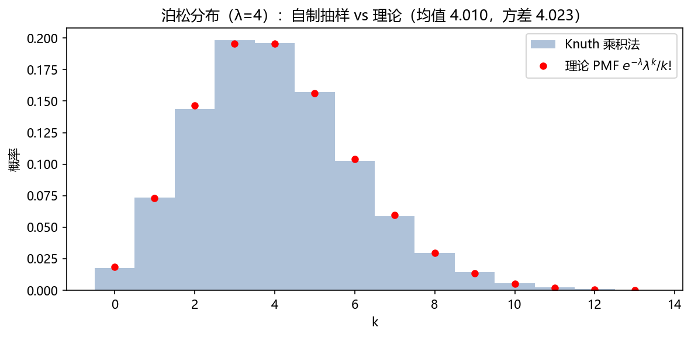

第 4 章 让电脑玩掷骰子：生成随机数#
本章解决：拆开"造随机数的机器"——伪随机的本质与平方取中的失败（4.1）、线性同余生成器与它的周期/结构缺陷（4.2）、怎么检验一个生成器（4.3，顺带复习假设检验）、现代引擎一瞥（4.4）；然后迈出"从均匀到分布"的第一步：离散分布与泊松（4.5）、连续均匀（4.6），对应教材 4.¼.2。 承上启下：4.5 的查表法就是第 5 章逆变换法的离散版；泊松乘积法里的指数间隔是第 7 章排队模拟的原料；4.4 的 Mersenne Twister 正是第 3 章
default_rng背后的老牌引擎。
| 关键词 | 事实 |
|---|---|
| 伪随机 | 确定性递推 + 种子；"随机性"是统计性质，不是来源神秘 |
| LCG | \(X_{k+1}=(aX_k+c)\bmod m\)，周期 \(\le m\)；满周期有判据 |
| 谱结构 | 输出点落在高维格子上——RANDU 三维只有 15 个平面 |
| 统计检验 | 卡方（均匀性）、KS（CDF 一致性）；通过 ≠ 随机 |
| 查表法 | 累积概率分段落表——离散分布的通用解法 |
本章代码：nb/ch04.ipynb（NumPy 实跑，种子 2027；LCG 实验为确定性算法，不耗随机流）。
4.0 本章导图#
4.1 伪随机数：确定性算法装出来的随机#
计算机是确定性机器，产不出真随机；所谓伪随机数（pseudorandom numbers），是一个确定性递推从种子（seed）出发算出的数列。它"看起来随机"靠的是统计性质，不是来源神秘。这不是妥协而是特性：同一种子重跑得到同一串数——调试、复现实验、并行分块都靠它。
历史上第一个方案来自 von Neumann（曼哈顿计划 needs）：平方取中法（middle-square）——把当前数平方，取中间几位当下一个数。四位数版：
def middle_square(seed, digits=4, n=25):
x, out = seed, []
for _ in range(n):
s = f"{x*x:0{2*digits}d}" # 平方，左侧补零到 2d 位
x = int(s[digits//2 : digits//2 + digits]) # 取中间 d 位
out.append(x)
return out
种子 4353: 9486, 9841, 8452, 4363, 357, 1274, 6230, 8129, 806, 6496, 1980, 9204, ...
种子 1000: 0, 0, 0, 0, ... ← 掉进 0 永远出不来
种子 3792: 3792, 3792, 3792, ... ← 恰是不动点（3792²=14379264，中四位还是 3792）
死穴一目了然：状态空间只有 \(10^4\) 个值，一旦落进陷阱（0、不动点、短环）就万劫不复。它教会我们评价生成器的第一标准——周期（period）：数列必然进入循环，循环长度越长越好。好生成器的完整清单（Dunn §3.3）：周期长、统计性质好（均匀 + 独立）、可复现、快、可移植。
4.2 线性同余生成器（LCG）#
用"线性函数 + 取模"造递推，一用就是七十年：
状态 \(X_k\in\{0,\dots,m-1\}\)，故周期 \(\le m\)；加大 \(m\) 是第一要务。
满周期判据（Hull–Dobell 定理）：混合同余（\(c>0\)）达到满周期 \(m\)，当且仅当 ① \(c\) 与 \(m\) 互素；② \(a-1\) 能被 \(m\) 的每个素因子整除；③ 若 \(4\mid m\)，则 \(4\mid a-1\)。
乘法生成器（\(c=0\)）因 \(X=0\) 是不动点，周期至多 \(m-1\)；取 \(m\) 为素数、\(a\) 为模 \(m\) 的本原根（primitive root，其幂遍历全部非零剩余）即达 \(m-1\)。最小标准生成器 MINSTD（Park–Miller 1988）取
周期 \(2^{31}-2\approx 2.1\times10^9\)。手写它毫无难度：
def minstd(n, seed=12345):
m, a = 2**31 - 1, 16807
x, out = seed, np.empty(n)
for i in range(n):
x = (a * x) % m
out[i] = x / m
return out
# 10 万个数：均值 0.5000（理论 0.5），方差 0.08337（理论 1/12 = 0.08333）

谱结构：二维看着还行，三维露馅#
一维直方图说明不了问题。把相邻输出当作坐标画散点——\((X_k, X_{k+1})\) 落在有限条平行直线上，这是所有 LCG 的通病：模 \(m\) 的整数格子经过线性映射投影成格子结构（lattice）。谱检验（spectral test，Dunn §3.4.1）就是量这些格子在多维下"多扁"：好参数的格子到高维仍接近各向同性，坏参数一维维露馅。
臭名昭著的反例是 IBM Scientific Subroutine Library 的 RANDU（\(a=65539=2^{16}+3\)，\(m=2^{31}\)）。代数上两步就能拆穿它：
而 \(6X_{k+1}-9X_k=(3\cdot2^{17}+9)X_k\)，于是恒有
三连点全部落在 \(9X_k-6X_{k+1}+X_{k+2}=c\cdot 2^{31}\)（\(c=-5,\dots,9\)）的 15 个平面上——三维"随机数"实际是 15 张薄纸：


4.3 怎么检验：统计检验（顺带复习假设检验）#
理论检验（周期、谱）针对参数做数学；统计检验针对输出做"找茬"——原假设 \(H_0\)："这串数来自 \(U(0,1)\)"。
卡方拟合优度检验（均匀性）：把 \([0,1)\) 均分 \(k\) 组，实际频数 \(O_i\)，期望频数 \(E_i=N/k\)。统计量
大样本下近似服从自由度 \(k-1\) 的卡方分布（\(N\) 个频数受 \(\sum O_i=N\) 一个约束，自由度比组数少 1——方差分析里的老朋友）。p 值 = \(H_0\) 为真时，出现"这么离谱或更离谱"的偏差的概率；\(p<0.05\) 判为与均匀性显著矛盾。
Kolmogorov–Smirnov 检验（CDF 一致性）：
经验 CDF 与理论 CDF 的最大纵距，比卡方更"整体"（不依赖分组方式）。
三组数同场竞技（scipy.stats）：
def uniform_tests(u, name, bins=20):
cnt = np.histogram(u, bins=bins, range=(0, 1))[0]
_, p_chi = stats.chisquare(cnt) # H0: 均匀
_, p_ks = stats.kstest(u, "uniform") # H0: U(0,1)
print(f"{name:>8}: 卡方 p = {p_chi:.3f}, KS p = {p_ks:.3f}")
| 生成器 | 卡方 p | KS p |
|---|---|---|
| MINSTD | 0.094 | 0.152 |
| RANDU | 0.712 | 0.811 |
| PCG64（NumPy 现默认） | 0.924 | 0.573 |
检验通过 ≠ 随机
RANDU 的 p 值漂亮得很，但它的 15 个平面就在那里。统计检验是找茬游戏：只能证伪，不能证真；单维、低维的检验尤其容易被骗。所以工程实践从不手搓生成器，只敢用被谱检验 + 大检验套件（TestU01、Practrand）拷打过的引擎。
4.4 现代引擎一瞥：Mersenne Twister 与 PCG64#
- Mersenne Twister（MT19937）：借助 624 维状态的线性递推 + 扭曲变换，周期 \(2^{19937}-1\)（梅森素数，得名于此）、623 维均匀分布性质。Python
random与旧版 NumPy 的默认引擎。弱点：状态可由 624 个输出反解（不能用于密码），高维线性结构仍在。 - PCG64：NumPy 1.17 起的默认。小状态 + 乘法置换（LCG 变体）+ 输出打乱函数，同样的统计强度下更小更快。
- 组合与混洗（Dunn §3.6–3.8）：把多个普通生成器的输出按规则混合（Wichmann–Hill、L'Ecuyer），或用一副生成器"洗"另一副的输出——思想都是用便宜的结构换取格子缺陷的抹平。
结论一句话：理解原理，生产只用库——np.random.default_rng(seed)。
4.5 从均匀到离散分布（教材 4.1）#
均匀随机数是"原料"，分布是"成型"。离散情形最通用的两板斧：
查表法（逆 CDF 的离散版）。目标分布 \(p_i\)，累积表 \(F_i=p_1+\cdots+p_i\)；抽 \(U\sim U(0,1)\)，看它落进哪一段：
推导一步：\(P(X=i)=P(F_{i-1}<U\le F_i)=F_i-F_{i-1}=p_i\)——均匀性原样搬运成分段概率。演示一颗不均匀骰子 \(P(i)\propto i\)（即 \(i/21\)）：
p = np.arange(1, 7) / 21
cdf = np.cumsum(p)
faces = np.searchsorted(cdf, rng.random(60_000)) + 1 # 二分落表
# 6 万次：最大偏差 0.0034

泊松分布的乘积法（Knuth）。泊松 \(Pois(\lambda)\) 计"单位强度下的事件数"，它和指数等待时间是一体两面。由 2.5 节，\(E_i=-\ln U_i\sim Exp(1)\) i.i.d.。于是连乘均匀数
而 \(N=\max\{k:\ E_1+\cdots+E_k\le\lambda\}\) 正是"到时刻 \(\lambda\) 为止发生的事件数"——泊松的定义式刻画。算法：不断连乘 \(U\)，第一次 \(\le e^{-\lambda}\) 时的连乘个数减一：
def poisson_knuth(lam):
L = np.exp(-lam)
k, prod = 0, rng.random()
while prod > L:
k += 1
prod *= rng.random()
return k
# λ=4，2 万次：均值 4.010，方差 4.023（理论均为 4）

4.6 连续均匀 U(a,b)（教材 4.2）#
连续均匀是第 5 章一切"捏分布"的起点，它本身就是查表法的最简单特例：
浮点上的两个细节值得知道：NumPy 的 random 输出 53 位精度，\(U\) 实际取值是 \(\{0, 1/2^{53}, \dots, (2^{53}-1)/2^{53}\}\)，分辨率 \(2^{-53}\approx 1.1\times10^{-16}\)——对绝大多数模拟足够，但要造"极高分辨率的离散分布"时记得它是有限网格；另外区间是左闭右开 \([0,1)\)，\(\ln U\)（要造指数分布）会因 \(U=0\) 报错，惯例用 \(\ln(1-U)\) 或先确认 \(U>0\)。
4.7 小结#
- 伪随机 = 确定性递推 + 种子；评价三管齐下：周期（Hull–Dobell / 本原根）、谱（格子结构）、统计（卡方、KS，只能证伪）。
- 从均匀到分布的第一批桥：查表法（离散通用）、乘积法（泊松）、线性伸缩（连续均匀）。
- 下一章解决剩下的：任意连续分布怎么捏？逆变换法给出理论最优解，舍选法兜底"CDF 不可积"的场合——Box-Muller、Gamma、Beta 全在那儿排队。
拓展
Lazzarini 式的"好得可疑"在检验里也有对应物：p 值过分漂亮（如 0.99999）同样值得警惕——真实均匀样本的 p 值应该均匀散布在 \((0,1)\)。批量检验时看 p 值的直方图，比看单次 p 值更能暴露猫腻。